Chapter3 Memory Hierarchy
3.1 Basic Concepts
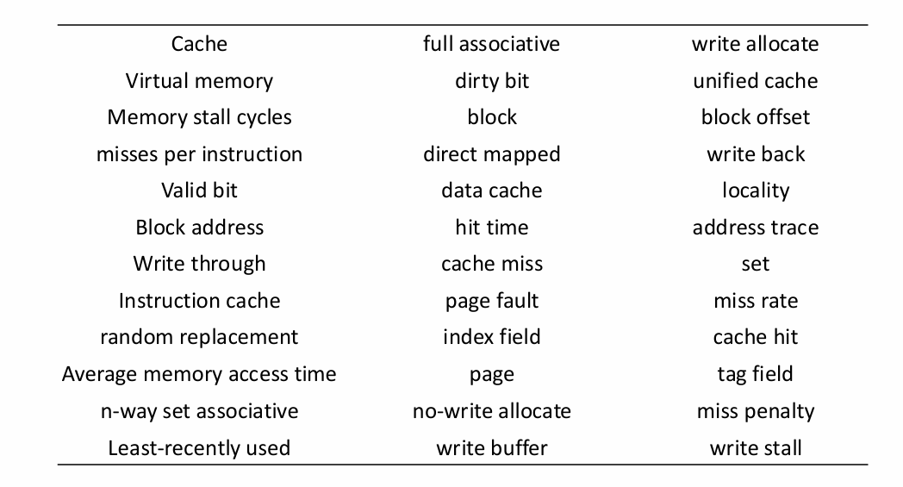
Locality:
- temporal locality 时间局部性 如果一个数据刚被访问，那么其有很大的可能性被再次访问。
- spatial locality 空间局部性 如果一个数据被访问，那么与其相邻的数据有很大的可能性被访问。
Memory Hierarchy:
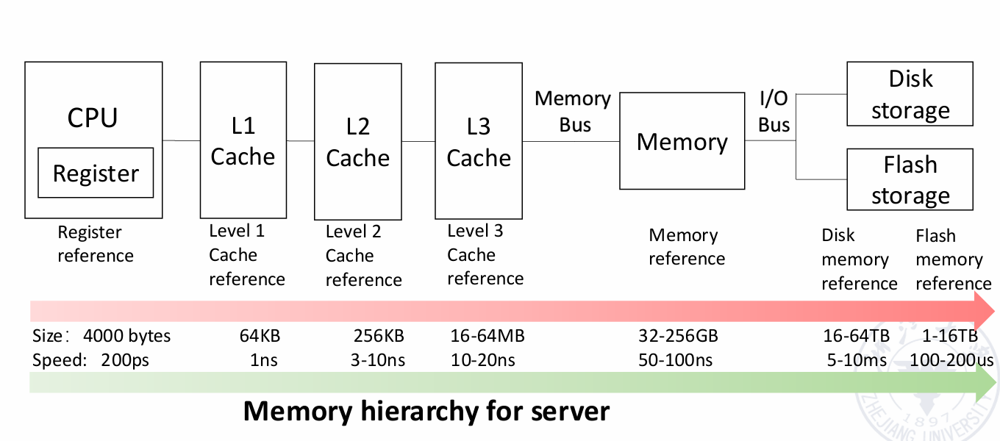
规律：
- 离CPU越近，容量越小
- 离CPU越近，访问速度越快
- 离CPU越近，价格越贵
Cache:
A safe place for hiding or storing things.
cache是一种存储形式，用于临时保存经常使用或近期使用的数据，当下一次需要使用这些数据时，能更快地获取。
CPU有访问memory的需求时，会先访问cache，如果cache有对应的数据，则称为hit，否则称为miss。
对于hit的情况，从开始寻找到获得数据的时间称为hit time；对于miss的情况，CPU需要再去memory或者storage寻找数据，这段延迟的时间称为miss penalty。
hit的比例称为hit rate，miss的比例称为miss rate，两者之和为1。
miss penalty主要取决于：
- latency: 找到目标的时间
- bandwidth: 传输数据的时间
导致miss的原因主要有：
- compulsory: 第一次访问时必然miss
- capacity: cache容量有限
- conflict: 多个地址映射到同一个block
cache的基本单位是block。
Finite State Machine:
cache的设计实际上可看作一种有限状态机。最简单的实现分成以下四个部分：
- Idle
- Compare Tag
- Write-Back
- Allocate
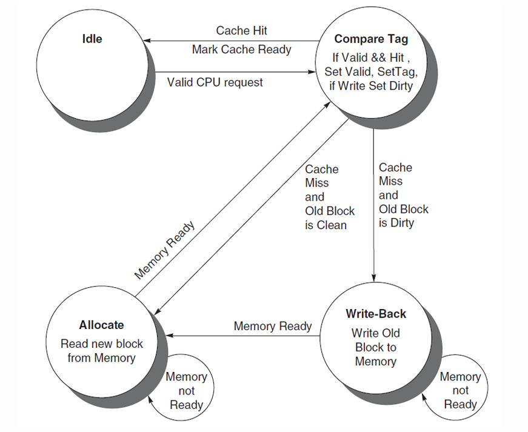
3.2 Four Questions for Cache Designers
Block Placement
解决的问题是：memory中的数据应该放在cache的哪个位置。
Direct Mapped:
直接映射的思想是：对memory的低地址取模，得到的值即为cache的index。

直接映射的好处是查找数据很方便，因为只要知道memory中的地址，就能得到cache的index。
但是，这样也会导致较多的冲突，因为多个memory地址可能映射到同一个cache位置。
Full Associative:
全相联的思路是：memory中的数据可以放在cache的任意位置，先到先得，直到cache满为止。
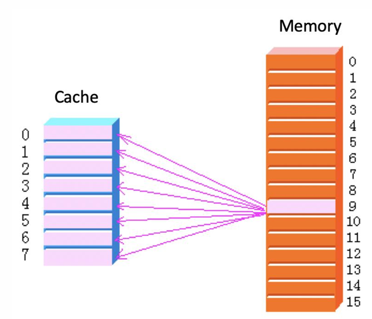
全相联的优劣与直接映射相反，冲突减少，但查找更加困难。
Set Associative:
组相联的思路是：融合直接映射和全相联，memory低地址取模得到对应的组别，每个组内的n个block可以随意放置，直到放满。
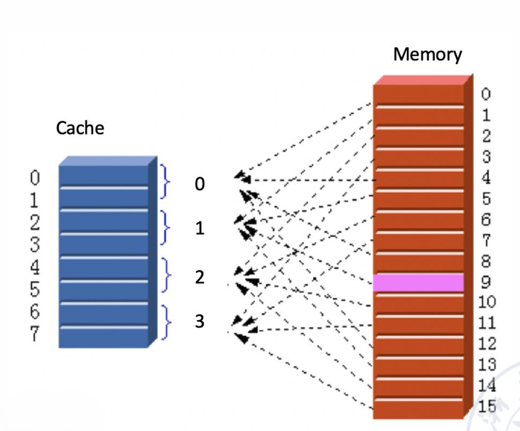
Note
当组相联的n取值为1时（每一组只有一个block），即为直接映射；当n取值为cache的block数时（所有block为一组），即为全相联。
Block Identification
解决的问题是：如何找到memory中的数据对应在cache中的位置。
对于cache的每一个block，都存有一个tag，存放对应memory的高地址。
当查找数据时，首先通过低地址计算出cache的index，然后通过tag判断是否hit（不同的memory地址可能对应到相同的index，这个时候就需要通过tag进行识别）。
除此之外，每一个block还存有一个valid bit，用来表征这个block当前是否有效。
Address Format:
对于一个memory地址，其可以分成三部分：
- index: 确定对应的block（直接映射）或set（全相联或组相联）
- tag: 在找到index对应的block（或set）后检查是否hit
- byte offset: 确定需要的数据在block内的位置，即第几个byte
对于一个cache，其分为多个block，每个block可能有以下部分：
- tag: 用于匹配memory地址
- data: 存放数据
- valid bit: 用于表征block是否有效
- dirty bit: 用于表征block是否被修改过
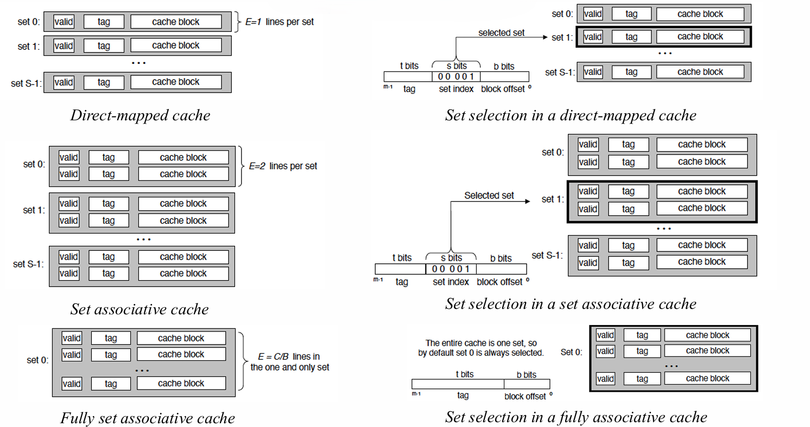
Note
常用block size直接指代data的大小，而不包括tag、valid bit等。
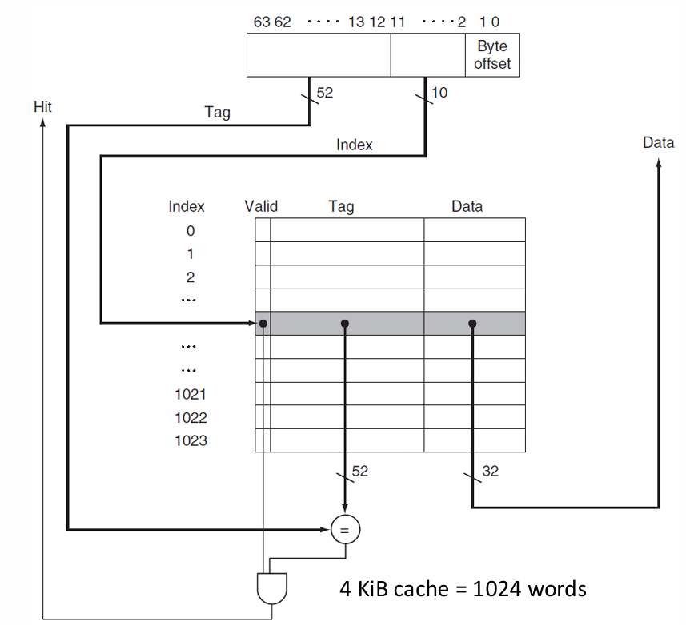
以上图为例：
假设一个memory地址的大小为64 bits，分为index、tag和byte offset三部分。
假设一个block的大小为$2^m$ words = $2^{m+2}$ bytes（特指实际数据字段），则可得byte offset在memory地址中对应的大小为$m+2$ bits。
考虑直接映射的情况，假设cache总共有$2^n$个block，则可得index在memory地址中对应的大小为$n$ bits。
因此，留给tag的大小为$64 - m - n-2$ bits。
对于cache一个完整的block，其包括tag、data、valid bit（只考虑这三个），大小分别为$64 - m - n - 2$ bits、$2^m\times 32$ bits、1 bit。
综上，整个cache的容量为：
$$2^n\times(2^m\times32+63-m-n)$$
Example
How many total bits are required for a direct-mapped cache with 16 KiB of data and four-word blocks, assuming a 64-bit address?
$16 \text{KiB}=2^{14}\text{B}=2^{12}\text{words}$
The block size (data) is $4\text{words}=2^2\text{words}, m=2$
$\frac{2^{12}\text{words}}{2^2\text{words}}=2^{10}, n=10$
$\text{tag size}=64-(n+m+2)=50\text{bits}$
$\text{cache size}=2^n\times(\text{block size}+\text{tag size}+\text{valid size})=2^{10}\times(4\times 32+50+1)=179\text{Kib}$
Example
Consider a cache with 64 blocks and a block size of 16 bytes. To what block number does byte address 1200 map?
block address = byte address / bytes per block = 1200/16 = 75
75 modulo 64 = 11
Block Replacement
解决的问题是：当cache已满或者出现冲突，应采取什么策略进行数据的替换。
Random:
Random随机选择替换目标，其实现相对容易，效果也还不错。
Least Recently Used (LRU):
LRU替换掉最久没有被访问的数据。
Example
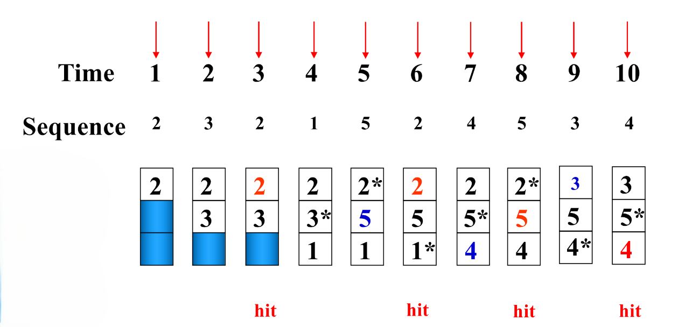
- time=1: 2不在cache中，miss，cache未满，直接放入
- time=2: 3不在cache中，miss，cache未满，直接放入
- time=3: 2在cache中，hit
- time=4: 1不在cache中，miss，cache未满，直接放入
- time=5: 5不在cache中，miss，由于3是2，3，1中最久没有被访问的，因此5替换3
- time=6: 2在cache中，hit
- time=7: 4不在cache中，miss，由于1是2，5，1中最久没有被访问的，因此4替换1
- time=8: 5在cache中，hit
- time=9: 3不在cache中，miss，由于2是2，5，4中最久没有被访问的，因此3替换2
- time=10: 4在cache中，hit
Note
“最久没有没访问”强调的是时间，而不是次数。换而言之，加入某个数据曾经被访问过很多次，但其他数据都在其之后被访问，那么这个数据还是会被替换掉。
First In First Out (FIFO):
FIFO替换掉最先进入cache的数据。
Example
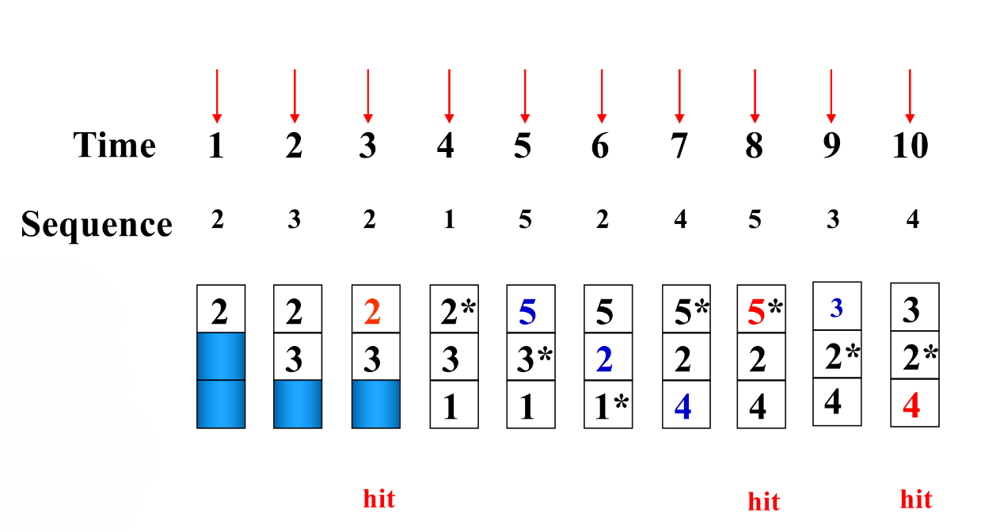
- time=1: 2不在cache中，miss，cache未满，直接放入
- time=2: 3不在cache中，miss，cache未满，直接放入
- time=3: 2在cache中，hit
- time=4: 1不在cache中，miss，cache未满，直接放入
- time=5: 5不在cache中，miss，由于2是2，3，1中最早放入的，因此5替换2
- time=6: 2不在cache中，miss，由于3是5，3，1中最早放入的，因此2替换3
- time=7: 4不在cache中，miss，由于1是5，2，1中最早放入的，因此4替换1
- time=8: 5在cache中，hit
- time=9: 3不在cache中，miss，由于5是5，2，4中最早放入的，因此3替换5
- time=10: 4在cache中，hit
Optimal:
Optimal是一种理论上的算法，实际并不可行。其通过未来的访问情况来选择最佳的替换策略。
Example
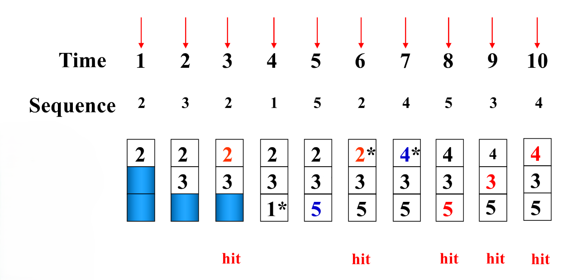
- time=1: 2不在cache中，miss，cache未满，直接放入
- time=2: 3不在cache中，miss，cache未满，直接放入
- time=3: 2在cache中，hit
- time=4: 1不在cache中，miss，cache未满，直接放入
- time=5: 5不在cache中，miss，从之后来看，1不会被再次访问，因此5替换1
- time=6: 2在cache中，hit
- time=7: 4不在cache中，miss，从之后来看，2不会被再次访问，因此4替换2
- time=8: 5在cache中，hit
- time=9: 3在cache中，hit
- time=10: 4在cache中，hit
Stack Replacement Algorithm:
$B_t(n)$表示$t$时刻$n$个block的存储数据，$B_t(n+1)$表示$t$时刻$n+1$个block的存储数据。固定$t$，若对于任意$n$，$B_t(n)$都是$B_t(n+1)$的子集，则$n+1$对应的hit rate一定不低于$n$对应的hit rate，该算法是一种堆栈替换算法。
在以上的算法中，LRU是一种堆栈替换算法。
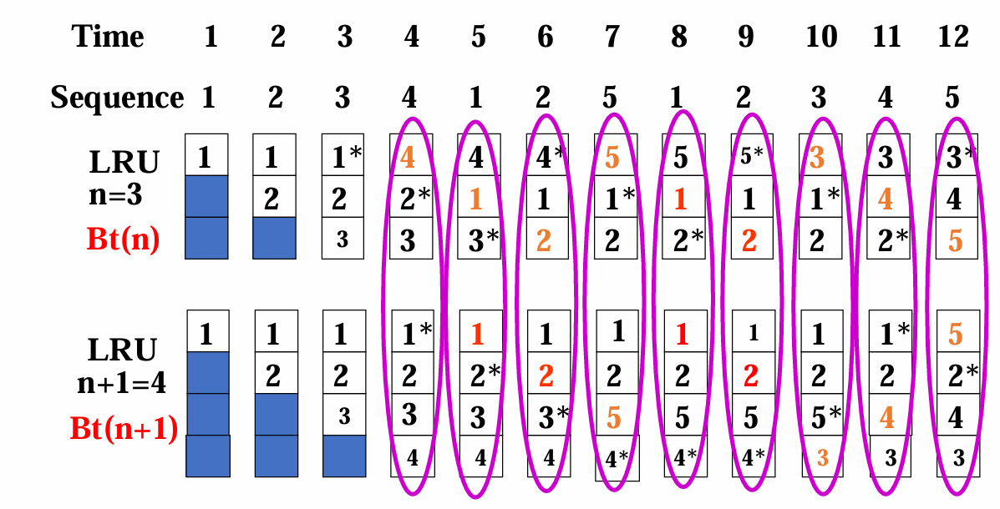
Example
对于下面一串访问序列，给出$n=1,2,3,4,5$时的cache占用情况。
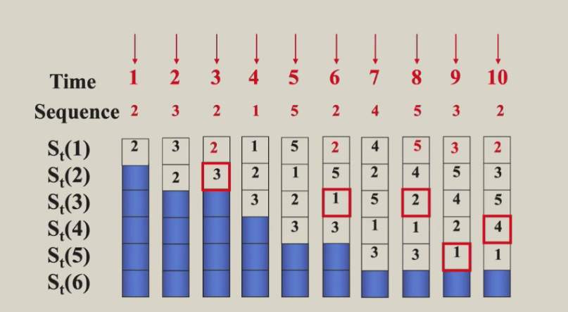
不妨假设cache的大小为5（保证不会发生冲突），且在每次更新cache时，保证从上到下是最近访问到最久访问的顺序。
- time=1: 2不在cache中，miss，cache未满，直接放入
- time=2: 3不在cache中，miss，cache未满，直接放入，且放到栈顶
- time=3: 2在cache中，hit，2放到栈顶
- time=4: 1不在cache中，miss，cache未满，直接放入，且放到栈顶
- time=5: 5不在cache中，miss，cache未满，直接放入，且放到栈顶
- time=6: 2在cache中，hit，2放到栈顶
- time=7: 4不在cache中，miss，cache未满，直接放入，且放到栈顶
- time=8: 5在cache中，hit，5放到栈顶
- time=9: 3在cache中，hit，3放到栈顶
- time=10: 2在cache中，hit，2放到栈顶
图中的红色方框对应了时间$t$和block数$n$，表示time为$t$时，$n$和$n+1$，$n+2$，……对应的情况都能hit。依次截取的情况即为$n=1,2,3,4,5$时的cache占用情况。
Note
不难发现，设红色方框坐标为$(n,t)$，则$(n,t-1)$和$(1,t)$对应的数相等。
Write Strategy
- write hit
- write through
- write back
- write miss
- write allocate
- no write allocate (write around)
Write Through:
当写操作hit时，cache和memory都进行更新。
Write Back:
当写操作hit时，只更新cache；当cache的某个block被替换时，再将其写回memory。
Write Buffer:
当数据需要写到memory中时，会存在write stall，影响CPU的性能。通过write buffer暂存需要写回的数据，之后由write buffer负责慢慢写回，可以让CPU正常运行。
Write Allocate:
当写操作miss时，先从memory中读取数据到cache，再在cache中进行写操作。
No Write Allocate (Write Around):
当写操作miss时，直接写入memory，不经过cache。
通常情况下，write back和write allocate结合使用，write through和write around结合使用。
Note
对于write allocate，先从memory中读取数据，再在cache中进行写操作，而不是直接写入cache。这样做的原因是，一个block的数据并不仅限于该地址对应的数据，还包括其相邻地址的数据，因此需要先读取整个block，再进行写操作。
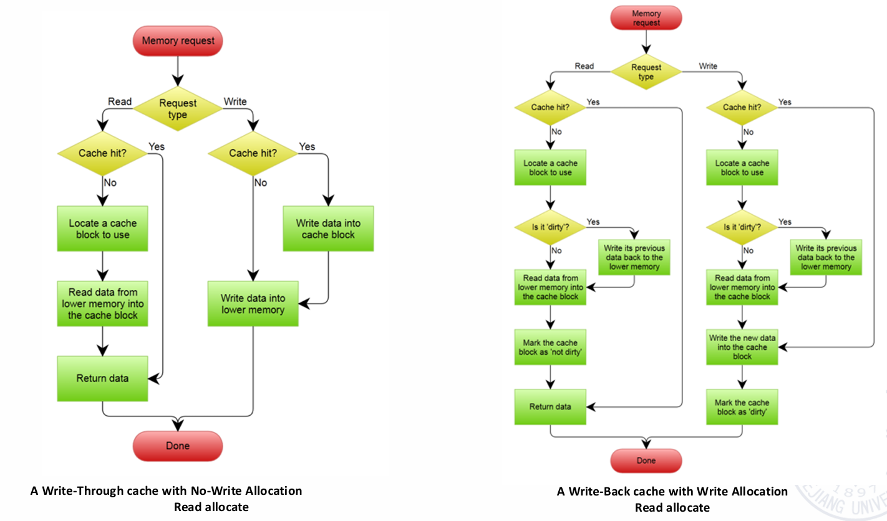
对于write through+write around：
- 读操作
- hit：从cache中直接读取
- miss：从memory中加载对应数据到cache，再读取
- 写操作
- hit：将数据写回cache和memory
- miss：只将数据写回memory
对于write back+write allocate：
- 读操作
- hit：从cache中直接读取
- miss
- dirty：
- clean：从memory中加载对应数据到cache，再读取，保持该block为clean
- 写操作
- hit：只将数据写回cache，标记该block为dirty
- miss：
- dirty：将block中的其他地址的数据写回其对应的memory，再从memory中加载对应数据到cache，最后在cache中写入新的数据，标记该block为dirty
- clean：从memory中加载对应数据到cache，再写入新的数据，标记该block为dirty
Note
dirty bit表征的是其所在block对应的memory中的数据与block中的数据是否一致。dirty表示cache中的数据为新数据，memory中的数据为旧数据；clean表示cache和memory中的数据一致。
Example
假设全相联，write back机制，有以下五条指令：
write Mem[100];
write Mem[100];
read Mem[200];
write Mem[200];
write Mem[100];
分别使用no write allocate和write allocate机制，hit和miss的情况如何？
| no write allocate | write allocate |
|---|---|
| miss | miss |
| miss | hit |
| miss | miss |
| hit | hit |
| miss | hit |
3.3 Memory System Performance
CPU Execution Time:
$$\text{CPU execution time}=(\text{CPU clock cycles}+\text{Memory stall cycles})\times\text{Clock cycle time}$$
$$\text{Memory stall cycles}=\text{IC}\times\text{MemAccess refs per instruction}\times\text{Miss rate}\times\text{Miss penalty}$$
二者结合可得：
$$\text{CPU execution time}=\text{IC}\times(\text{CPI}_{\text{Execution}}+\frac{\text{MemAccess}}{\text{Inst}}\times\text{Miss rate}\times\text{Miss penalty})\times\text{Clock cycle time}$$
Average Memory Access Time (AMAT):
$$\text{Average memory access time}=\frac{\text{Whole accesses time}}{\text{All memory accesses in program}}$$
$$=\frac{\text{Accesses time on hitting}+\text{Accesses time on missing}}{\text{All memory accesses in program}}$$
$$=\text{Hit time}+(\text{Miss Rate}\times\text{Miss Penalty})$$
代入上式可得：
$$\text{CPU execution time}=\text{IC}\times(\frac{\text{ALU operations}}{\text{Inst}}\times\text{CPI}_{\text{ALU operation}}+\frac{\text{MemAccess}}{\text{Inst}}\times\text{Average memory access time})\times\text{Clock cycle time}$$